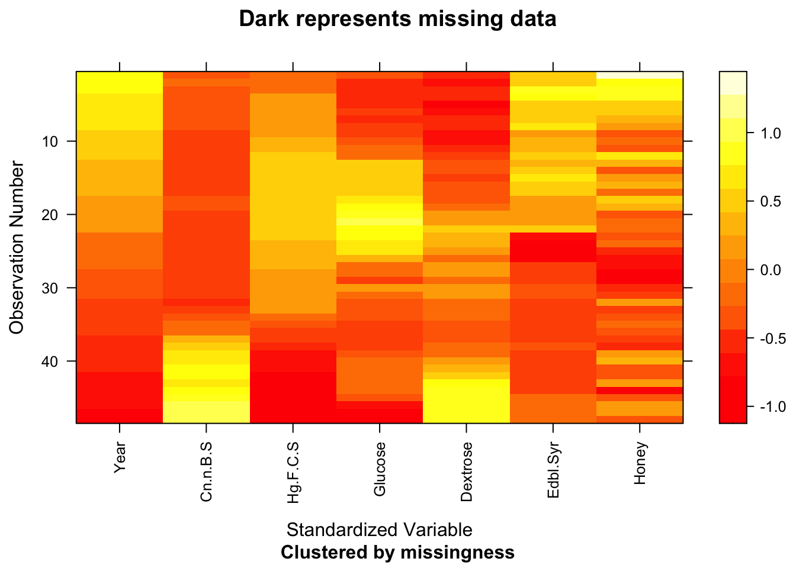
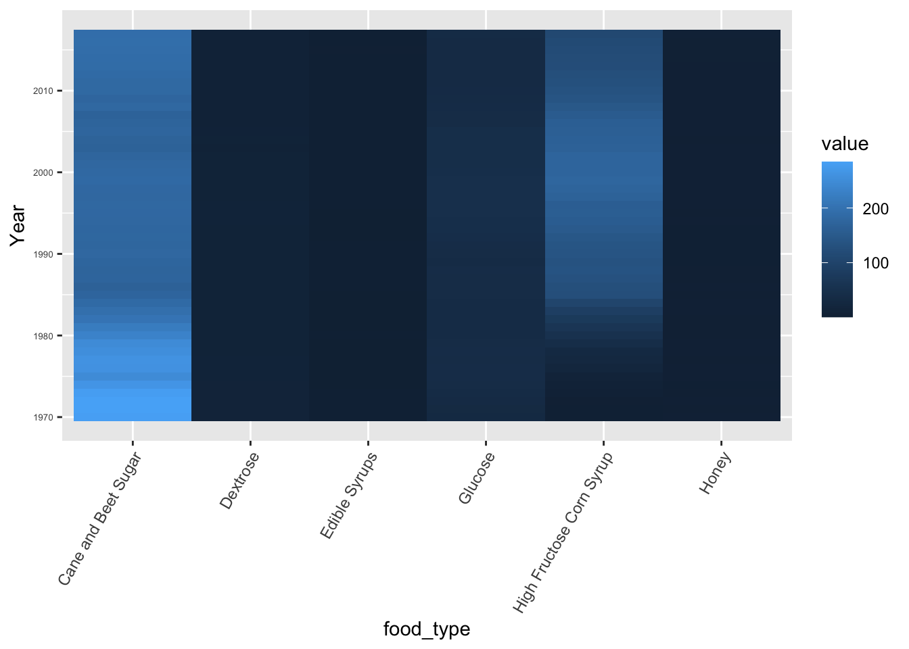

Chapter 6 Sugars
## X1 Year Cane and Beet Sugar High Fructose Corn Syrup Glucose Dextrose Edible Syrups
## 0 0 0 0 0 0 0
## Honey
## 0
## [1] "Year" "Butter" "Margarine" "Lard" "Beef Tallow" "Shortening" "Salad and Cooking Oils"
## [8] "Other Added Fats" "Light Cream" "Half and Half" "Heavy Cream" "Sour Cream" "Cream Cheese" "Eggnog"
For fats, it seems that the pattern of missing data starts in 2000 for some food types and others the missing data starts in 2010. It seems like either the fats database is updated every decade or added fats is gradually being excluded from this dataset.
All values are present in the sugars spreadsheet